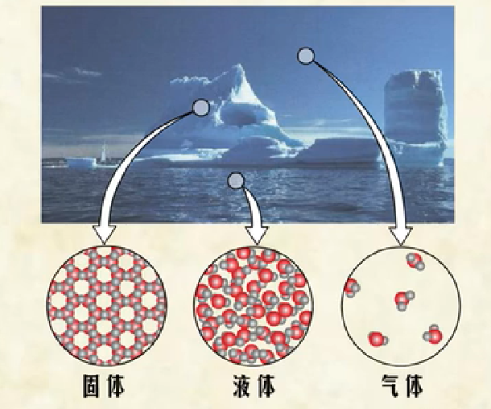
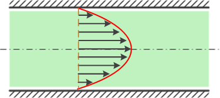
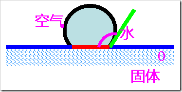
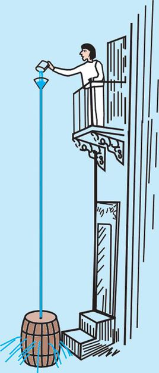
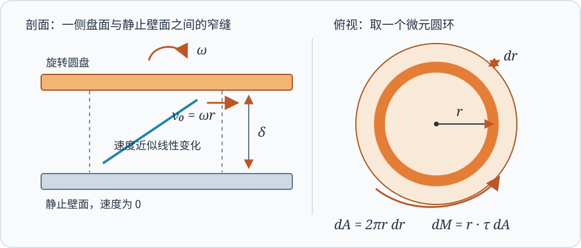
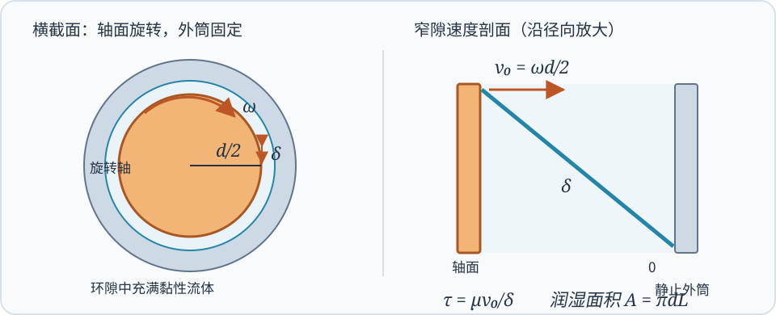
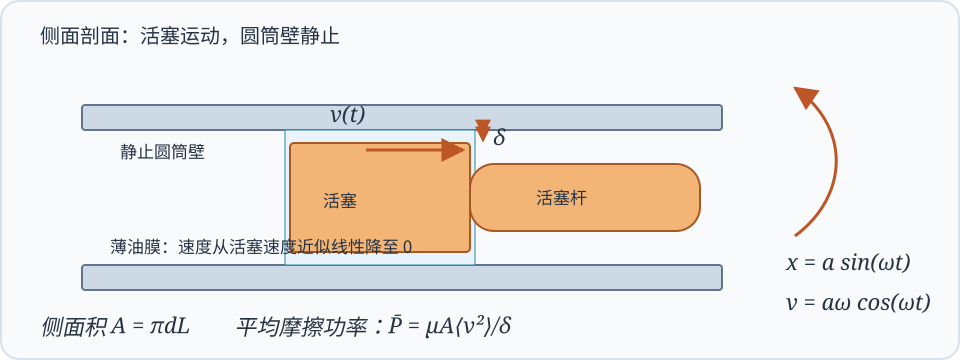

工程流体力学（甲）Ⅰ¶
课程信息
- 主讲教师：俞自涛、范利武
- 教材：孔珑主编《工程流体力学（第四版）》，中国电力出版社
- 课程范围：流体性质、流体静力学、理想流体动力学、黏性流动、可压缩一维流动、量纲分析与相似原理
- 考核方式：期末考试 60%；平时成绩 40%（作业、阅读和课堂测验）。此项按 2026 年秋季教学指南记录。
工程流体力学研究流体的静止、运动及其与固体之间的作用。管道阻力、泵与风机的功耗、喷管流量、机翼和球体受到的力，都可以沿着同一条思路分析：先选取流体模型，再写质量、动量和能量守恒关系，最后用材料性质与边界条件确定未知量。
本页按《工程流体力学（甲）Ⅰ》的六章教学提纲编排。例题按课程范围放在相应章节，注明是作业、课件题、手写回忆卷还是自拟演示题。
核心手写讲义原稿¶
以下四份是本讲义前三章的主要课堂依据。正文将原稿里中英文交错的术语、图和推导改写为中文；想核对老师的列式顺序、图示或旁注时，可打开对应 PDF 原页。PDF 页码均指文件阅读器显示的页码。
| 手写讲义 | 页数 | 读图与复习重点 |
|---|---|---|
| 第一章：流体的定义与模型 | 5 | 连续介质、流体与固体的差别、黏性和流体性质 |
| 第一章 1.1：流体的性质和特点 | 7 | 牛顿内摩擦定律、非牛顿流体、表面张力、毛细升降 |
| 第二章：流体静力学 | 16 | 静压分布、压强计、帕斯卡定理、平面与曲面总压力、浮力及旋转液面 |
| 第三章：理想流体力学基础 | 24 | 控制体与连续性、欧拉与动量方程、伯努利方程、皮托管和文丘里管 |
对照手写稿做题
先读正文对应的中文推导，再回看原稿的控制体、受力图和红蓝旁注。手写回忆卷的极坐标连续性题可与第三章原稿第 5–8 页的连续性推导对照；静压与烟囱题先复习第二章原稿第 5–9 页的压强分布；量纲题另看本页第六章。
第一次课堂测验速查¶
老师公布的测验范围是流体黏度、牛顿流体、表面张力、帕斯卡定理。先看黏性与牛顿内摩擦定律、表面张力与毛细现象和帕斯卡定理，再做第一章作业与课件例题卡片及帕斯卡例题。作业 2-7 的热膨胀计算收录在例题中，但不属于这次公布的四项范围。
| 测验主题 | 选择、填空先会判断 | 对应计算练习 |
|---|---|---|
| 流体黏度 | \(\mu\) 与 \(\nu\) 的定义、单位及 \(\nu=\mu/\rho\) | 作业 2-9 |
| 牛顿流体 | \(\tau=\mu\,\mathrm du/\mathrm dy\)、牛顿与非牛顿流体的区别 | 作业 2-12、2-14，课件窄缝流动题 |
| 表面张力 | \(\sigma\) 的单位、接触角与毛细升降方向 | 作业 2-16、2-17 |
| 帕斯卡定理 | 静压强的方向性、外加压强增量的传递 | 液压机举力演示题 |
符号速查¶
| 符号 | 含义 | 常用单位或关系 |
|---|---|---|
| \(\rho\) | 密度 | \(\mathrm{kg/m^3}\) |
| \(p\) | 绝对压强 | \(\mathrm{Pa}\) |
| \(\mu\) | 动力黏度 | \(\mathrm{Pa\cdot s}\) |
| \(\nu\) | 运动黏度 | \(\nu=\mu/\rho\)，\(\mathrm{m^2/s}\) |
| \(\sigma\) | 表面张力系数 | \(\mathrm{N/m}\) |
| \(\boldsymbol V\)、\(u,v,w\) | 速度矢量及其直角坐标分量 | \(\mathrm{m/s}\) |
| \(Q\)、\(\dot m\) | 体积流量、质量流量 | \(Q=AV\)，\(\dot m=\rho Q\) |
| \(A,D,L\) | 截面积、管径、长度 | \(\mathrm{m^2}\)、\(\mathrm m\) |
| \(g\) | 重力加速度 | 约 \(9.81\ \mathrm{m/s^2}\) |
| \(\gamma_g\) | 气体比热比 | \(\gamma_g=c_p/c_v\) |
| \(\mathrm{Re}\) | 雷诺数 | \(\rho VL/\mu=VL/\nu\) |
| \(\mathrm{Ma}\) | 马赫数 | \(V/a\) |
| \(\delta\) | 缝隙宽度或边界层厚度，依题目定义 | \(\mathrm m\) |
| \(f_D,K\) | 达西沿程阻力系数、局部阻力系数 | 无量纲 |
同一个希腊字母可能有不同含义
有些教材用 \(\gamma\) 表示流体重度 \(\rho g\)，也常用 \(\gamma_g\) 表示气体比热比。本文用 \(\rho g\) 表示重度，用 \(\gamma_g\) 表示比热比；遇到原题时以题目定义为准。
章节概览¶
| 章节 | 标题 | 主要问题 |
|---|---|---|
| 第一章 | 流体的性质 | 流体如何区别于固体，黏性和表面张力怎样进入模型 |
| 第二章 | 流体静力学 | 静止流体的压强如何分布，流体对平面和曲面施加多大作用力 |
| 第三章 | 理想流体动力学 | 连续性、欧拉方程和伯努利方程如何描述流动 |
| 第四章 | 黏性流体动力学 | 黏性流动与管道损失如何计算，边界层概念如何理解 |
| 第五章 | 可压缩流体一维定常流动 | 声速、马赫数、临界流动和喷管如何分析 |
| 第六章 | 量纲分析与相似原理 | 如何用少量无量纲参数组织实验和模型设计 |
建议的做题顺序
先明确流体是否可压缩、是否可忽略黏性、流动是否定常，再选择控制体或流体微团。写方程前先画出方向、截面和压强基准；算完后检查单位、符号和极限情形。
甲Ⅰ手写回忆卷 · 年份未注明¶
这份手写记录由同学提供，没有试卷抬头、年份和完整数值。所记内容对应甲Ⅰ的连续性方程、管路损失、烟囱流动、等熵气流和量纲分析。题目卡片分散放在各章对应知识点下，保留原题线索；缺失处用符号推导，条件不足时说明还需要什么，避免把补充假设当成原题。可展开查看手写原图。
查看手写回忆卷原图
| 原题线索 | 放在讲义何处 |
|---|---|
| 证明二维极坐标连续性方程 | 第三章：质量守恒与连续性方程 |
| 由截面积求局部阻力系数 \(\zeta_2\)；已知 \(Q\) 求 \(h_j\) | 第四章：局部阻力 |
| 烟囱密度差、沿程阻力与高度 \(H\) | 第四章：管路能量方程 |
| 已知两截面状态求速度、温度与马赫数 | 第五章：等熵气流 |
| 证明沉降速度的量纲表达 | 第六章：量纲分析 |
第一章 · 流体的性质¶
章节概览
本章建立后续计算所用的流体模型。流体的核心特征是不能在静止平衡时承受剪切应力；运动时的黏性则把速度梯度和内摩擦联系起来。
流体与连续介质模型¶
流体包括液体和气体。与固体相比，流体没有固定形状；在切向力作用下会持续变形，直至应力消失或与其他作用达到平衡。固体在小变形范围内主要表现为“应力对应变”，牛顿流体则表现为“切应力对应变率”。

工程流体力学通常采用连续介质假设：把流体看成在空间中连续分布的介质，密度、压强、温度和速度等量都视为连续场。只要研究尺度远大于分子平均自由程，这个模型就能有效描述大多数常见工程流动。
液体通常较难压缩，在许多低速工程问题中可取 \(\rho=\text{常数}\)；气体容易压缩，密度可能随压强和温度明显变化。是否可视为不可压缩，最终应由工况决定，而不能仅凭“液体”或“气体”的名称判断。
密度、重度与压缩性¶
密度定义为单位体积内的质量：
重度为单位体积的重量，记作 \(\rho g\)。相对密度是流体密度与规定参考物质密度之比，无量纲。
描述压缩性的常用量是体积弹性模量：
\(K\) 越大，流体越难压缩；\(\beta\) 越小，压缩性越弱。水在一般低压流动中常可近似按不可压缩流体处理，气体则需结合流速、压差和温度变化判断。
黏性与牛顿内摩擦定律¶
黏性是流体抵抗相邻流层相对滑动的性质。黏性在运动中表现为内摩擦：速度不同的流层相互作用，较快流层受到阻滞，较慢流层受到拖曳。
对两块平行板之间的简单剪切流动，若速度主要沿 \(x\) 方向变化、且沿法向 \(y\) 的速度分布为 \(u(y)\)，牛顿内摩擦定律为
其中 \(\tau\) 为切应力，\(\mu\) 为动力黏度。动力黏度反映流体内摩擦的强弱，单位为 \(\mathrm{Pa\cdot s}\)。运动黏度定义为
单位为 \(\mathrm{m^2/s}\)。动力黏度用于应力关系；运动黏度常出现在雷诺数和扩散方程中。

牛顿流体的切应力与剪切速率成线性关系。水和空气在常见工程条件下可近似看作牛顿流体。剪切稀化、剪切增稠或具有屈服应力的流体属于非牛顿流体，不能直接套用常数 \(\mu\) 的牛顿内摩擦定律。
温度对黏度的影响
常压附近，液体温度升高时黏度通常下降；气体温度升高时黏度通常上升。低压范围内压强影响常较弱，高压时则可能不可忽略。
黏度可用毛细管流量法、落球法或旋转黏度计测量。落球法要注意容器壁和端部对测量结果的影响；毛细管法根据已知管径、长度、压差和流量反算黏度。
表面张力与毛细现象¶
液体表面分子受力不对称，使液面具有收缩趋势。表面张力系数 \(\sigma\) 表示单位长度上的表面张力，满足
若是肥皂膜，薄膜有两个自由表面，总拉力为 \(F=2\sigma l\)。对半径为 \(R\) 的液滴，液内外压强差为 \(2\sigma/R\)；肥皂泡有内外两个界面，压强差为 \(4\sigma/R\)。
接触角 \(\theta\) 表征液体、气体和固体三相交界处的界面状态。圆形细管内的毛细高度近似为
其中 \(r\) 是管内半径。\(\theta<90^\circ\) 时液面上升，\(\theta>90^\circ\) 时液面下降。

雷诺数与流动状态¶
雷诺数衡量惯性作用相对黏性作用的强弱：
其中 \(V\) 是代表速度，\(L\) 是代表长度。雷诺数小，黏性影响相对突出；雷诺数大，惯性影响相对突出。管流常用管径作特征长度；平板边界层常用距前缘的距离 \(x\)。
雷诺数必须和特征尺度一起写
\(\mathrm{Re}_D=VD/\nu\) 与 \(\mathrm{Re}_x=Vx/\nu\) 对应不同问题。计算时注明所用的速度、长度和黏度，不能只写一个没有下标的雷诺数。
第一章作业与课件例题卡片¶
下面各卡片可展开核对题目、列式和答案。题号按你发来的本学期红笔作业照片记录；该照片未印年份，按 2026 年秋季课程归档。圆盘、旋转轴与往复活塞的课件例题也已制成卡片。作业 2-7 是第一章作业，但这次小测通知没有列热膨胀。
作业 2-9｜动力黏度换算为运动黏度
题目：某油的动力黏度 \(\mu=2.9\times10^{-4}\ \mathrm{Pa\cdot s}\)、密度 \(\rho=678\ \mathrm{kg/m^3}\)，求运动黏度。
求解：区分 \(\mu\) 与 \(\nu\)，直接代入
易错点：运动黏度的单位是 \(\mathrm{m^2/s}\)，计算时必须除以密度。
作业 2-12｜平行板剪切反求动力黏度
题目：两板间距 \(\delta=0.5\ \mathrm{mm}\)，上板以 \(U=0.25\ \mathrm{m/s}\) 匀速运动；维持运动需要的切向力为每平方米 \(2\ \mathrm N\)。求流体动力黏度。
求解：单位面积受力就是切应力 \(\tau=F/A=2\ \mathrm{Pa}\)。线性速度剖面给出 \(\tau=\mu U/\delta\)，所以
易错点：先把 \(0.5\ \mathrm{mm}\) 换成 \(5\times10^{-4}\ \mathrm m\)；题给的是单位面积的力，无须再另乘板面积。
作业 2-14｜由飞轮减速反求轴承间油液黏度
题目：飞轮重 \(W=500\ \mathrm N\)、回转半径 \(k=0.30\ \mathrm m\)，轴承长 \(L=0.05\ \mathrm m\)、轴径 \(d=0.02\ \mathrm m\)、径向间隙 \(\delta=0.05\ \mathrm{mm}\)。转速 \(n=600\ \mathrm{r/min}\) 时角减速度大小为 \(\alpha=0.02\ \mathrm{rad/s^2}\)。假设减速全部来自油液黏性阻力，求 \(\mu\)。
求解：先算转动惯量与所需阻力矩；窄环隙内轴面切向速度为 \(\omega d/2\)。
轴面切应力为 \(\mu\omega d/(2\delta)\)，润湿面积为 \(\pi dL\)，力臂为 \(d/2\)，因此
易错点：“回转半径” \(k\) 用于 \(I=mk^2\)，不是飞轮的几何外半径；\(0.05\ \mathrm{mm}=5\times10^{-5}\ \mathrm m\)。
作业 2-16｜水在玻璃毛细管中上升
题目：内径 \(d=10\ \mathrm{mm}\) 的开口玻璃管插入 \(20^\circ\mathrm C\) 的水中，接触角 \(\theta=10^\circ\)，求管内水面上升高度。水的密度和表面张力系数按题目所用物性表取值。
求解：表面张力的竖直分量与上升液柱的重量平衡。管径形式为
因 \(\cos10^\circ>0\)，水面上升；代入 \(20^\circ\mathrm C\) 水的物性，约得 \(h=0.294\ \mathrm{cm}\)（课本答案）。
作业 2-17｜水银在玻璃毛细管中下降
题目：内径 \(d=8\ \mathrm{mm}\) 的开口玻璃管插入 \(20^\circ\mathrm C\) 的水银中，接触角约为 \(140^\circ\)，求管内液面变化。
求解：仍用 \(h=4\sigma\cos\theta/(\rho gd)\)。因为 \(\cos140^\circ<0\)，计算所得 \(h<0\)，表示下降；按课本物性表，下降约 \(1.36\ \mathrm{mm}\)。
易错点：先保留 \(\cos\theta\) 的符号，再把负值解释为下降；不要只报高度绝对值而漏写方向。
作业 2-7｜升温造成的体积流量变化（本次测验范围外）
题目：\(70^\circ\mathrm C\) 的水以 \(Q_1=50\ \mathrm{m^3/h}\) 流入锅炉，升至 \(90^\circ\mathrm C\)，体积膨胀系数 \(\alpha_V=0.00064\ \mathrm{K^{-1}}\)，求出口体积流量。
求解：质量流率不变，同一批水的体积随温度近似增大 \(\alpha_V\Delta T\)，所以
范围提示：这题是红笔作业题，但老师公布的首次测验四项中没有热膨胀。
第二章 · 流体静力学¶
章节概览
静止流体没有剪切应力，任一点的应力只有各向相同的压强。重力场中的压强随深度线性增加；在加速容器内，则应使用相对容器的有效体积力。
静压强及其特征¶
流体静止时，任一点的压强与受压面的方向无关。压强总沿受压面法线作用。静止液体满足帕斯卡原理：外加压强的变化会传递到液体内部各处。
重力场中取 \(z\) 轴竖直向上，静力平衡方程为
若液体密度近似不变，则任意点压强为
\(h\) 是测点低于自由液面的深度，\(p_0\) 是液面压强。开口容器中 \(p_0\) 通常为大气压。绝对压强、表压和真空度的关系是
从手写稿核对推导：先在微小流体元上列竖直方向的压强力与重力平衡，得到 \(\mathrm dp/\mathrm dz=-\rho g\)；只有再取 \(\rho\) 为常数，才可积分为 \(p=p_0+\rho gh\)。第二章手写稿第 1–5 页给出受力图和积分步骤。
对于密度随高度变化的气体，不能直接把同一个 \(\rho\) 代入整个高度。若气体可视为等温理想气体，由 \(\rho=p/(RT)\) 联立静力方程可得
这也是第二章手写稿第 8 页讨论大气压随高度变化时使用的附加假设。
帕斯卡定理¶
静止流体中的压强增量会向各处传递。若密闭、连通的液体受到额外压强 \(\Delta p\)，在忽略损失的静力条件下，各处压强都增加相同的 \(\Delta p\)。静止流体同一点的压强与受压面朝向无关，压强力始终垂直于受力面。
液压装置中，位于同一高度的两活塞受到相同的压强增量。设活塞面积为 \(A_1,A_2\)，则
若两点高度不同，还须按 \(p+\rho gz=\text{常数}\) 计入静水压差；帕斯卡定理说的是外加压强的增量相同，并不说不同深度处的总压强相同。

帕斯卡例题¶
演示题｜液压机由小活塞推力求大活塞举力
题目：两活塞同高，小活塞直径 \(d_1=2\ \mathrm{cm}\)，大活塞直径 \(d_2=10\ \mathrm{cm}\)。给小活塞施力 \(F_1=100\ \mathrm N\)，忽略自重和损失，求大活塞的举力。
求解：圆形活塞面积与直径平方成正比。由压强增量相等，
检查：力放大 \(25\) 倍时，大活塞移动距离是小活塞的 \(1/25\)；液压装置没有凭空产生能量。此为讲义自拟演示题，不冒充历年卷原题。
测压管与压强计¶
静水中同一连通液体的同一水平面上压强相等。使用 U 形管或多液柱压强计时，可从已知压强处出发沿管逐段走到目标点：
- 向下经过液柱，压强增加 \(\rho g\Delta h\)；
- 向上经过液柱，压强减少 \(\rho g\Delta h\)；
- 穿过不同液体界面时，压强连续，但密度要换成该段液体的密度。
压强计的符号检查
先画出各段液柱高度，再给每一段标清“向上”或“向下”。若最终测点比已知点低且处于同一静止液体中，压强差应为正；出现相反符号通常是高度方向写错。
平面上的静水总压力¶
平面面积为 \(A\)，形心位于自由液面下深度 \(h_c\)，且液面压强为 \(p_0\)。对表压积分得合力大小
总压力作用点称为压力中心。对与自由液面相交、倾角为 \(\alpha\) 的平面，沿平面从液面量距离 \(s\)，形心位置为 \(s_c\)，形心轴惯性矩为 \(I_G\)，则
压力中心通常低于形心，因为压强随深度增加。若液面上方还存在均匀表压，需要把均匀压强产生的合力一并计入。
曲面上的静水总压力¶
曲面受力可拆成水平和竖直分量：
- 水平分量等于该曲面在竖直平面上的投影所受静水总压力；
- 竖直分量等于曲面上方或下方假想液柱的重量，具体方向由受压侧和曲面形状决定；
- 合力为两分量的矢量和。
浮力与加速容器¶
物体浸入静止液体后，受到向上的浮力
其中 \(V_{\mathrm{disp}}\) 是排开液体的体积。浮力作用线通过排开液体的体积中心。
若容器相对惯性系以加速度 \(\boldsymbol a_0\) 平移，在容器坐标系中加入惯性力后，静止液体满足
自由液面垂直于有效体积力方向。竖直容器向上加速时，液体相对容器的有效重力变为 \(g+a_0\)，底部压强梯度变大；水平加速时，自由液面倾斜。
旋转容器的自由液面¶
第二章手写稿第 16 页还画出了液体随容器作刚体转动的抛物形液面。若液体绕竖直轴以恒定角速度 \(\Omega\) 转动，沿径向与竖直方向分别有 \(\partial p/\partial r=\rho\Omega^2r\)、\(\partial p/\partial z=-\rho g\)。积分并令自由液面压强处处相同，得到
做题检查：半径越大，液面越高；若题目还给液体体积，须另用体积守恒确定轴心液面高度 \(z(0)\)。
第二章例题 · U 形管压强计的列式¶
若一侧连接压强为 \(p_A\) 的容器，另一侧开口于大气，测压液体密度为 \(\rho_m\)，被测液体密度为 \(\rho\)，按液面高度从 A 点向开口端逐段走。每经过一段液体，就按“向下加、向上减”写一项 \(\rho_i g\Delta h_i\)，最后令到达开口端的压强等于 \(p_{\mathrm{atm}}\)。多液柱题不宜直接套单一高度公式。
第三章 · 理想流体动力学¶
章节概览
理想流体是忽略黏性的模型。质量守恒给出连续性方程，牛顿第二定律给出欧拉方程，机械能沿流线守恒给出伯努利方程。三者描述的物理量不同，不能互相替代。
描述流体运动¶
流体质点的位置和速度随时间变化。速度场可写成 \(\boldsymbol V(x,y,z,t)\)。质点沿时间走过的轨迹称为迹线；某一时刻处处与速度相切的曲线称为流线；连续经过固定空间点的流体质点构成脉线。定常流动中三者重合。
随流体质点观察的物理量变化率称为物质导数：
例如质点加速度为
定常流动中局部加速度为零，但流体仍可因空间速度变化而有对流加速度。
质量守恒与连续性方程¶
控制体内质量变化率加上流出质量净通量为零：
微分形式为
不可压缩流体满足
一维定常管流常用
不可压缩时退化为 \(A_1V_1=A_2V_2=Q\)。
若截面上速度不均匀，式中的 \(V_i\) 应取截面平均法向速度，而不是轴线速度：第三章手写稿第 8 页写为
定常多入口、多出口时，应逐个截面写 \(\sum\dot m_{\rm in}=\sum\dot m_{\rm out}\)。下方极坐标连续性证明是同一个守恒条件在另一组坐标中的表达。
回忆题：极坐标连续性方程¶
年份未注明 · 证明｜二维极坐标连续性方程
原题线索（查看手写原图）：证明不可压缩流体二维平面流动的极坐标连续性方程
解析：取单位厚度的微小扇形控制体，径向边长为 \(\mathrm dr\)，周向边长近似为 \(r\,\mathrm d\theta\)。径向净流出量为 \(\partial(rv_r)/\partial r\,\mathrm dr\,\mathrm d\theta\)；周向净流出量为 \(\partial v_\theta/\partial\theta\,\mathrm dr\,\mathrm d\theta\)。不可压缩、二维流动的净流出量为零，故
展开第一项即得题设形式。易漏项是 \(v_r/r\)：周向弧长随半径变大，不能把极坐标直接当直角坐标使用。
理想流体运动方程与动量守恒¶
忽略黏性应力后，作用于流体微团的表面力只剩压强。欧拉方程为
其中 \(\boldsymbol f\) 是单位质量体积力，重力场中为 \(\boldsymbol g\)。对控制体，动量定理写成
定常单入口、单出口时，右侧简化为 \(\dot m(\boldsymbol V_2-\boldsymbol V_1)\)。计算弯管、喷嘴和射流受力时，应把压强力、重力及支座反力按同一坐标方向列出。
伯努利方程¶
对不可压缩、定常、无黏流动，若体积力有势，在同一条流线上积分欧拉方程可得
或按单位重量写成水头形式
三项分别是压强水头、速度水头和位置水头。
使用伯努利方程前的检查
- 流动可视为定常。
- 流体密度近似不变，黏性损失可以忽略或另行补入。
- 选取的两点在同一条流线上；若流动无旋，常数才可扩展到不同流线。
- 两点间没有未计入的泵功、涡轮功或显著热能交换。
实际黏性管流的伯努利方程需加入水头损失，并按需要加入泵扬程和涡轮取能，见第四章。停滞点处速度降为零，停滞压强为 \(p_0=p+\rho V^2/2\)；该关系是皮托管测量速度的基础。
小孔出流、文丘里管与皮托管¶
大容器液面面积远大于小孔面积、两处均近似为大气压、液面速度可忽略时，由伯努利方程得到托里拆利公式
文丘里管在缩口处截面积减小、速度升高、静压降低。联立连续性方程和两断面间伯努利方程可由压差求流量。皮托管利用迎流停滞点与静压孔之间的压差测得动压：
实际仪器需用流量系数、压强孔布置和密度修正。
手写讲义第 23 页｜文丘里管由压差求流量
题目模型：不可压缩液体密度 \(\rho\)，水平文丘里管的入口与喉部面积为 \(A_1>A_2\)，两点压差为 \(\Delta p=p_1-p_2>0\)。忽略损失，求体积流量。
列式：连续性方程 \(V_1A_1=V_2A_2=Q\)；同高两点的伯努利方程给出 \(\Delta p=\rho(V_2^2-V_1^2)/2\)。消去速度后
若压差由密度 \(\rho_m\) 的测压液测得、液柱高差为 \(h\)，且引压点等高，则 \(\Delta p=(\rho_m-\rho)gh\)。真实仪器的收缩损失与速度剖面影响可归入流量系数 \(C_d\)，使实测流量为 \(C_d\) 乘上述理想值。对照手写原图第 22–23 页。
手写讲义第 21 页｜皮托管由总静压差求流速
题目模型：在相同高度测得来流静压 \(p\) 与迎流停滞压强 \(p_0\)；忽略两点间损失，求来流速度。
列式：停滞点速度近似为零，伯努利方程给出 \(p+\rho V^2/2=p_0\)，故 \(V=\sqrt{2(p_0-p)/\rho}\)。若两端接同一种测压液且存在液柱高差，先用压强计关系换算 \(p_0-p\)，再代入速度式。手写稿特别标出了停滞压孔与静压孔的测点不能颠倒；见第 21 页。
第四章 · 黏性流体动力学¶
章节概览
实际流体的黏性使壁面产生切应力和能量损失。本章的核心流程是先判断流动状态，再求速度分布或阻力系数，最后把沿程损失和局部损失并入能量方程。
固壁无滑移条件¶
黏性流体贴着固壁运动时，紧贴壁面的流体速度等于壁面速度：固定壁上为零，移动壁上等于壁面速度。这是求平板剪切和管内层流速度分布的边界条件。
库埃特流与泊肃叶流¶
两块平行板间距为 \(h\)，下板静止、上板以 \(U\) 运动，且没有流向压强梯度时，库埃特流速度分布为
\(Q'\) 是单位宽度的体积流量。
两板固定、压强沿 \(x\) 方向下降时，板间平面泊肃叶流为
最大速度在中面，平均速度为最大速度的 \(2/3\)：
圆管内充分发展层流的速度剖面为抛物线：
相应流量和平均速度为
课件窄缝流动例题卡片¶
以下三题来自你发的课件截图。先选接触面，再写局部速度、速度梯度和切应力；平动求力，转动求力矩，功率还要乘速度或角速度。
课件图 1-16｜圆盘窄缝中的黏性阻力矩
题目：半径为 \(R=d/2\) 的圆盘以角速度 \(\omega\) 转动，盘面与静止壁面之间有均匀、很薄的流体缝隙 \(\delta\)，动力黏度为 \(\mu\)。求流体作用在圆盘这一侧表面上的阻力矩大小。设 \(\delta\ll d\)，忽略圆盘边缘效应，并把缝隙中的速度分布近似看成直线。

第一步：先看半径 \(r\) 处，不要把整张圆盘当成同一个速度。该处盘面切向速度是 \(v_0=\omega r\)，静止壁面速度为零。由无滑移条件和线性速度分布，缝隙内速度梯度及盘面切应力为
第二步：取一个很窄的圆环。半径为 \(r\)、宽为 \(\mathrm dr\) 的环带面积是 \(\mathrm dA=2\pi r\,\mathrm dr\)。环带上的摩擦力，再乘以力臂 \(r\)，才得到微元力矩：
第三步：沿半径积分。圆心处 \(r=0\)，盘缘处 \(r=d/2\)，因此阻力矩大小为
为什么积分里是 \(r^3\)？
\(\tau\propto r\)（盘缘速度更快），\(\mathrm dA\propto r\,\mathrm dr\)（外圈环带更长），力臂又是 \(r\)。三者相乘得到 \(r^3\,\mathrm dr\)。切应力随半径变化，不能直接用一整个圆盘面积乘一个固定切应力。
若转速以每分钟 \(n\) 转给出，代入 \(\omega=2\pi n/60=\pi n/30\) 即可。上式只计一个盘面与一处缝隙；若上下两侧条件完全相同，两个盘面的阻力矩相加。量纲检查：\([\mu\omega d^4/\delta]=\mathrm{N\cdot m}\)。
课件图 1-15｜同心圆柱旋转阻力矩与功率
题目：半径为 \(d/2\)、长度为 \(L\) 的圆柱轴在静止圆筒中转动，均匀环隙宽度为 \(\delta\)，其中充满动力黏度为 \(\mu\) 的流体。若 \(\delta\ll d\)，忽略端面和轴承损失，求流体对转轴的阻力矩及维持转动所需功率。

轴面半径为 \(d/2\)，所以轴面切向速度为 \(v_0=\omega d/2\)；外筒静止，窄环隙内可近似为线性速度分布。轴面切应力与润湿面积分别为
把切应力乘以轴面面积得到切向阻力，再乘轴半径得到阻力矩：
维持匀速转动时，驱动功率等于阻力矩乘角速度：
圆柱与圆盘的积分区别
圆柱轴面上半径固定为 \(d/2\)，因此切应力处处相同，直接用 \(M=F(d/2)\)。圆盘上半径从 \(0\) 变到 \(d/2\)，局部速度和力臂都随半径变化，必须对环带积分。
课件例题 1-2｜往复活塞的平均摩擦功率
题目：活塞长 \(L=10\ \mathrm{cm}\)、直径 \(d=8\ \mathrm{cm}\)，在同心圆筒中往复运动。均匀间隙为 \(\delta=0.5\ \mathrm{mm}\)，油液动力黏度为 \(\mu=0.09\ \mathrm{Pa\cdot s}\)。活塞位移为 \(x=a\sin(\omega t)\)，振幅 \(a=20\ \mathrm{cm}\)，每分钟往复 \(n=360\) 次。忽略活塞惯性及端面摩擦，求克服流体摩擦所需的平均功率。

先由位移求速度。一往复对应一个周期，角频率为
活塞侧面与静止圆筒之间近似为库埃特流，润湿侧面积 \(A=\pi dL\)，故切应力大小和摩擦力大小为
瞬时驱动功率等于摩擦力乘活塞速度大小，即 \(P(t)=F(t)|v(t)|\)。由于 \(v^2(t)=a^2\omega^2\cos^2(\omega t)\)，而一个周期内 \(\cos^2\) 的平均值为 \(1/2\)，得到
代入 SI 单位：\(L=0.10\ \mathrm m\)、\(d=0.08\ \mathrm m\)、\(a=0.20\ \mathrm m\)、\(\delta=5.0\times10^{-4}\ \mathrm m\)。这里求的是一个完整往复周期的平均功率；不能把最大速度代入后当作平均值。
管流状态与沿程阻力¶
圆管雷诺数为 \(\mathrm{Re}_D=\bar uD/\nu\)。通常 \(\mathrm{Re}_D\lesssim2300\) 为层流，约 \(2300\) 至 \(4000\) 为过渡区，较大时为湍流；临界值会受入口扰动、管道粗糙度等影响。
达西－魏斯巴赫公式写作
层流时 \(f_D=64/\mathrm{Re}_D\)。湍流时 \(f_D\) 取决于雷诺数和相对粗糙度 \(\epsilon/D\)，可用莫迪图或科尔布鲁克公式求取：
水力光滑管、过渡粗糙管和完全粗糙管对应不同的黏性与粗糙度影响区间，不能仅凭“粗糙”或“光滑”口头判断系数。
局部阻力按
计算，\(K\) 对应的参考速度必须与阻力系数定义一致。突扩、突缩、弯头、阀门和入口出口都可能产生局部损失。
回忆题：局部阻力系数与水头损失¶
年份未注明 · 计算①｜由两截面积求局部阻力系数
原题线索（查看手写原图）：已知 \(A_1,A_2\)，求 \(\zeta_2\)。原图没有管件形状，也没有标明 \(\zeta_2\) 的参考速度。
解析：若原题图是突然扩大，且 \(\zeta_2\) 以扩大后断面速度 \(V_2\) 为基准，连续方程给出 \(V_1/V_2=A_2/A_1\)。用突扩损失公式
若图中是突然缩小、弯头或阀门，则不能仅凭 \(A_1,A_2\) 使用此式；应先确定管件类型和系数定义。
年份未注明 · 计算②｜已知流量求局部水头损失
原题线索（查看手写原图）：已知 \(Q\)，求 \(h_j\)，与上一小问属于同一管路题。
解析：参考断面若为 2，则 \(V_2=Q/A_2\)，故
在突然扩大这一条件下，也可直接用 \(h_j=\frac{Q^2}{2g}(1/A_1-1/A_2)^2\)。若原题 \(\zeta_2\) 采用断面 1 的速度作基准，须相应改为 \(h_j=\zeta_2 Q^2/(2gA_1^2)\)。原图未给数值，不能算出唯一数值答案。
管路能量方程与组合管路¶
实际流动沿程的能量方程可写为
\(H_p\) 为泵对流体增加的水头，\(H_t\) 为涡轮从流体取走的水头，\(h_L\) 是沿程和局部损失之和，\(\alpha\) 是动能修正系数。
串联管路各段流量相同，总损失为各段损失之和；并联支路的总水头损失相同，总流量等于各支路流量之和。复杂管网可按节点连续方程与回路能量方程联立求解。
回忆题：烟囱高度与抽力¶
年份未注明 · 计算｜烟囱高度与抽力
原题线索（查看手写原图）：烟囱直径 \(d\)，烟气密度 \(\rho_1\)，大气密度 \(\rho_2\)，烟气流量 \(Q\)，沿程阻力系数 \(\lambda\)；截面 1 的负压需超过图中所写阈值（手写数值疑为 \(150\ \mathrm{Pa}\)），求高度 \(H\)。
解析：若截面 1 位于烟囱底部、出口 2 与外界同压，忽略局部损失并把两截面的烟气速度视为相同，则 \(V=4Q/(\pi d^2)\)。外界空气柱与烟气柱的静压差提供抽力，沿程损失消耗其中一部分：
若阈值确为 \(p_*=150\ \mathrm{Pa}\)，条件为
分母须为正，否则此模型下增高烟囱也达不到指定抽力。若原题另计出口、入口局部损失，或“截面 1 压强”的基准不同，须把相应项重新列入压强方程。图中缺少 \(d,Q,\rho_1,\rho_2,\lambda\) 的数值，无法确定数值高度。
边界层概念¶
流体掠过固壁时，无滑移条件使近壁速度从零逐渐过渡到外流速度，形成黏性影响显著的边界层。常把速度达到外流速度 \(99\%\) 的位置作为边界层厚度；逆压强梯度足够强时，近壁流动可反向并发生分离。甲Ⅰ教学安排要求认识边界层概念，详细动量积分计算不列为本页例题。
第五章 · 可压缩流体一维定常流动¶
章节概览
本章主要研究密度随压强、温度变化的高速气流。先由声速确定马赫数，再结合连续方程、能量方程和等熵关系分析喷管截面变化和流量是否堵塞。
声速、马赫数与等熵关系¶
小扰动在气体中传播的速度称为声速。对热完全气体的等熵小扰动，
马赫数为
\(\mathrm{Ma}<1\) 为亚声速，\(\mathrm{Ma}=1\) 为声速，\(\mathrm{Ma}>1\) 为超声速。若气流变化足够缓慢且过程可逆、绝热，满足
定常一维能量方程与滞止参数¶
稳定、绝热、无轴功的一维流动满足
对定比热理想气体，
\(T_0\) 是气流等熵减速到零速时的滞止温度。等熵流动中滞止温度和滞止压强不变。滞止压强关系为
回忆题：两截面等熵气流¶
年份未注明 · 计算｜两截面等熵气流的速度、温度和马赫数
原题线索（查看手写原图）：已知截面 1 的 \(p_1,T_1,A_1\)，截面 2 的 \(p_2,A_2\)，以及气体比热比 \(\gamma_g\)、气体常数 \(R\)；求 \(V_1,\mathrm{Ma}_1,V_2,T_2,\mathrm{Ma}_2\)。图中注明等熵。
解析：先用等熵关系求静温，记连续方程给出的速度比为 \(k\)：
再用绝热、无轴功能量方程 \(c_pT_1+V_1^2/2=c_pT_2+V_2^2/2\)，其中 \(c_p=\gamma_gR/(\gamma_g-1)\)，解得
检查：根号内必须非负；若 \(p_2<p_1\) 且气流加速，通常有 \(T_2<T_1\)、\(k>1\)。若代入题目数值不满足此条件，应检查流向、面积、是否真正等熵，以及是否遗漏激波或其他损失。原图没有给具体数值，卡片保留可直接代入的符号答案。
等熵喷管与临界流动¶
一维定常质量守恒为
气流速度、密度和截面积的变化满足
亚声速流动要加速，需要收缩截面；超声速流动要加速，需要扩张截面。收缩－扩张喷管可先在收缩段加速到声速，再在扩张段继续加速到超声速。
当喉部达到 \(\mathrm{Ma}=1\)，质量流率达到给定滞止状态下的最大值，称为临界或堵塞流动。临界状态参数为
继续降低背压不会再增加喉部质量流率；喷管流量是否达到临界值，应由喉部状态和背压判断。
第五章例题 · 判断收缩段是否能使气流加速¶
先算入口马赫数 \(\mathrm{Ma}_1=V_1/\sqrt{\gamma_gRT_1}\)。若入口为亚声速，缩小面积使速度增大、静压和静温下降；若已是超声速，单纯收缩反而使速度降低。若题目要求出口超声速，应确认装置是否包含达到声速的喉部和其后的扩张段。
第六章 · 量纲分析与相似原理¶
章节概览
实验研究往往同时涉及几何尺寸、流速、密度、黏度和重力等变量。量纲分析把变量组合成无量纲数，帮助减少实验次数，并判断模型与原型能否相似。
量纲一致性与 \(\Pi\) 定理¶
量纲一致性要求物理方程两边的量纲相同。对 \(n\) 个物理量，如果它们由 \(k\) 个独立基本量纲组成，依巴金汉 \(\Pi\) 定理指出问题可化为 \(n-k\) 个独立无量纲组合之间的关系。
常见基本量纲为质量 \(M\)、长度 \(L\)、时间 \(T\) 和温度 \(\Theta\)。选重复变量时，应满足：彼此量纲独立、涵盖问题所含基本量纲，且不把待求因变量选作重复变量。
量纲分析步骤¶
- 写出待求量及所有可能相关变量。
- 列出各变量的量纲。
- 选出满足独立性条件的重复变量。
- 对每个非重复变量构造无量纲乘积，解出指数。
- 检查各 \(\Pi\) 群的量纲确为 1，再由实验确定群间函数关系。
回忆题：沉降速度与量纲分析¶
年份未注明 · 证明｜沉降速度的量纲表达
原题线索（查看手写原图）：用量纲法说明一个速度 \(V\) 可写成
原图只写 \(\rho,\rho_1,\mu_1\)，未写具体物体；这里用 \(\rho_s\) 表示物体密度、\(\rho_f\) 表示流体密度，按物体在流体中沉降、\(\rho_s>\rho_f\)解释该式。\(f\) 为未知无量纲函数，括号内是雷诺数。
解析：若特征尺度为 \(d\)，惯性阻力尺度为 \(\rho_f V^2d^2\)，有效重力尺度为 \((\rho_s-\rho_f)gd^3\)，则两者平衡给出速度尺度
黏性影响由 \(\mathrm{Re}=\rho_f Vd/\mu_f\) 表征，尚不知道的阻力规律并入 \(f(\mathrm{Re})\)，于是得到题中隐式关系。只靠量纲一致性不能确定函数 \(f\)，也不能单独推导出浮力造成的密度差；后者还用到了沉降时重力与浮力的物理平衡。若物体为球且阻力系数定义为 \(F_D=C_D\rho_f V^2(\pi d^2/4)/2\)，则 \(f=\sqrt{4/(3C_D)}\)，而 \(C_D\) 仍取决于 \(\mathrm{Re}\)。
相似条件与常见无量纲数¶
模型与原型通常依次检查几何相似、运动相似和动力相似。对主导物理机制，需使对应无量纲数相等或足够接近：
| 无量纲数 | 定义 | 主要比较的作用 |
|---|---|---|
| 雷诺数 \(\mathrm{Re}\) | \(\rho VL/\mu\) | 惯性力与黏性力 |
| 弗劳德数 \(\mathrm{Fr}\) | \(V/\sqrt{gL}\) | 惯性力与重力 |
| 欧拉数 \(\mathrm{Eu}\) | \(\Delta p/(\rho V^2)\) | 压强力与惯性力 |
| 马赫数 \(\mathrm{Ma}\) | \(V/a\) | 流速与声速，衡量压缩性 |
| 韦伯数 \(\mathrm{We}\) | \(\rho V^2L/\sigma\) | 惯性力与表面张力 |
管流阻力实验通常优先匹配雷诺数；自由液面波浪常需匹配弗劳德数；高速气流需关注马赫数；小尺度液滴和毛细流动需关注韦伯数。若多个效应都不可忽略，模型尺度设计可能无法同时满足所有相似条件，应说明主要误差来自哪一项。
第六章例题 · 圆柱阻力的无量纲表达¶
设圆柱受到的阻力 \(F_D\) 与流体密度 \(\rho\)、动力黏度 \(\mu\)、来流速度 \(V\) 和圆柱直径 \(D\) 有关。取 \(\rho,V,D\) 为重复变量，可得
左侧可整理为阻力系数，右侧是雷诺数的函数。于是不同尺寸模型在相同雷诺数下，阻力系数可直接比较。
复习时最容易混淆的几组关系¶
- 静压强与伯努利压强：静水公式由静力平衡得到；伯努利方程沿流线连接压强、速度和高度。
- 黏度与运动黏度：\(\mu\) 进入应力关系，\(\nu=\mu/\rho\) 进入雷诺数。
- 流线与迹线：定常时重合；非定常时通常不同。
- 滞止压强与静压强：滞止压强对应无损减速到零速后的压强；静压强是流体所在位置的实际压强。
- 达西系数与局部系数：沿程项还要乘 \(L/D\)；局部损失项使用题目指定的参考速度。
- 伯努利方程与动量方程：前者平衡机械能，后者平衡矢量动量；弯管受力题通常两者都要用。
资料说明¶
主体章节依照《工程流体力学（甲）Ⅰ的课程知识体系》《课程教学指南_2026年秋季学期》及对应课程资料整理；作业题来自用户提供的红笔照片，课件例题来自用户提供的截图。现已收录一份未注明年份、未保留完整数值的甲Ⅰ手写回忆卷，按可辨认的题干线索与本课程知识点整理解析；与前述作业题、课件题分别标注，不推定具体考试年份。